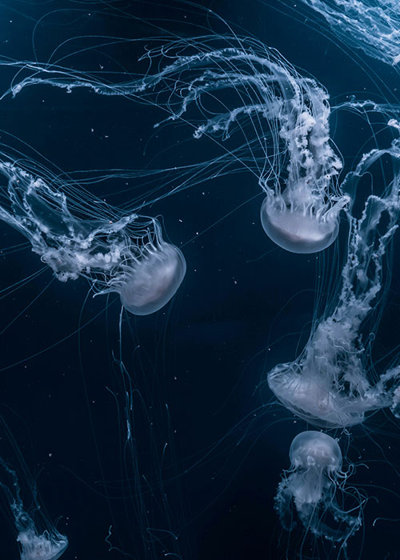
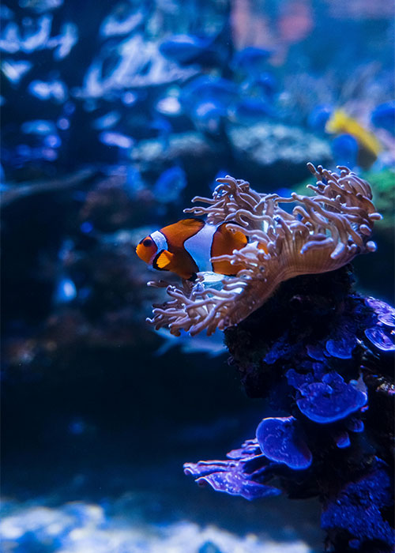
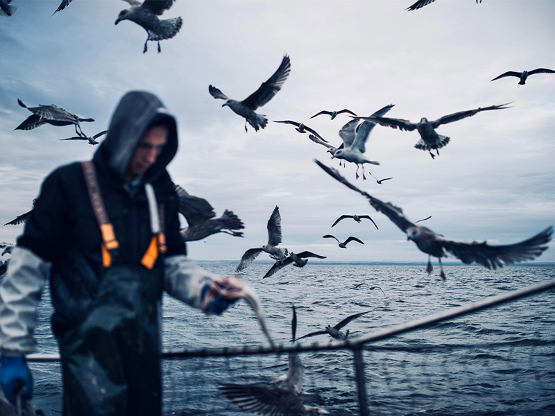
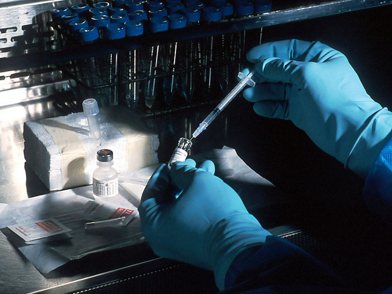
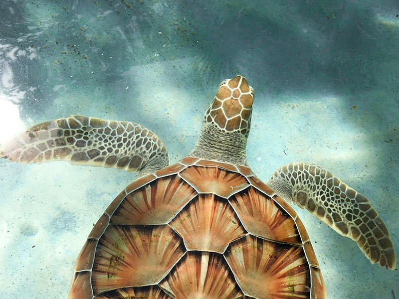
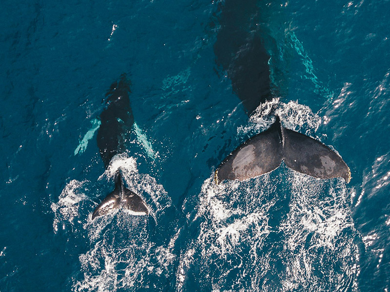
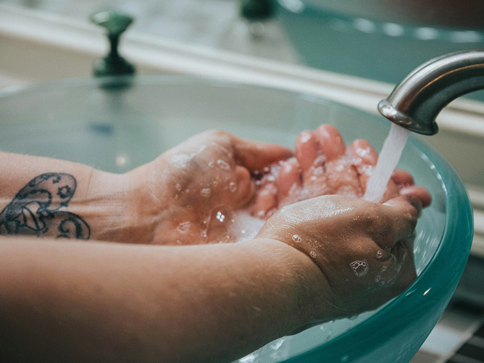

Asumiendo un compromiso global
El cambio no se da solo, se trata de una red de ayuda entre todos. Actualmente la lucha por los ecosistemas marítimos sufren por falta de impulso y cobertura. Tu voz y tus acciones pueden cambiar todo.

El cambio no se da solo, se trata de una red de ayuda entre todos. Actualmente la lucha por los ecosistemas marítimos sufren por falta de impulso y cobertura. Tu voz y tus acciones pueden cambiar todo.
Con solo dos datos podrás formar parte de nuestra red, y ser parte de nuestra movida proteger los océanos en tu país, y en todo el mundo.

El constante aumento de temperatura del océano podría causar irreparables en nuetros arrecifes de corales. La meta era 2020, pero la lucha sigue, y en Beluga dedicaremos este 2026 a esta problemática.


Parte del cuidado de los ecosistemas marinos viene de la pesca responsable. Este es nuestro plan para fomentar la pesca artesanal.
Leer informe
El ph de los océanos promedia en 8, un nivel acídico mayor al ideal para la vida marina. Estos estuidos analizan sus posibles efectos.
Leer informe
La preservación de la biodiversidad del océano no es solo preservar nuestro alimento, pero también toma un rol clave en el desarrollo de medicinas.
Leer Informe
Estos son los objetivos porpuestos para el 2030 por parte de la ONU.
Leer artículo
Cuidar del mundo comienza con tu rutina diaria. Tus decisiones y acciones valen más que cualquier donación.
Leer artículo